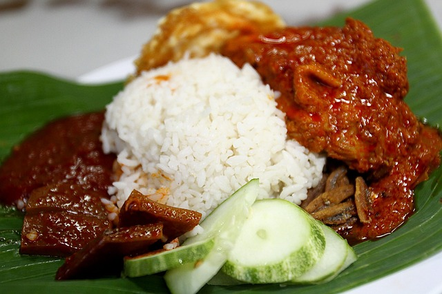

Nasi Lemak is a traditional Malay fragrant rice dish cooked in coconut milk and pandan leaf. It is commonly found in Malaysia, Singapore, Brunei, and Southern Thailand. It is often served with various accompaniments such as fried crispy anchovies, roasted peanuts, cucumber slices, hard-boiled or fried egg, and spicy chili sambal.
